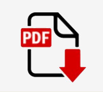

ABOUT ME
Lily Yang came from China in 1981 and graduated from Brigham Young University with a M.A. degree in Computational Linguistics. Lily has over 10 years working experience as a programmer and IT managing and training experience with Paragon Technologies, Inc. and over 5 years experiences as a web and graphic designer and over 15 years of teaching digital media design.
Lily holds a certificate of UX/UI Designer and several industrial IT certifications such as MCSE, MOUS, CNA, IC3, A+, i-Net+, Network+, Master CIW Designer, CIW CT, and ACA of Adobe Photoshop CS5. She is also a Microsoft Certified Trainer (MCT) and an Adobe Certified Trainer (ACT).
Lily has been teaching at Davis Technical College since 2002. This is what she says about her work:
“The most rewarding thing for me is to see my students be able to use the skills they gain from my class and become employable, creative, and successful. It is my duty and responsibility to help, support, and guide my students to complete their training and reach their goals.”
Lily has a strong passion for photography, digital designs and UX/UI design.
Here is the full resume in .PDF format. Click the image to view the resume.
